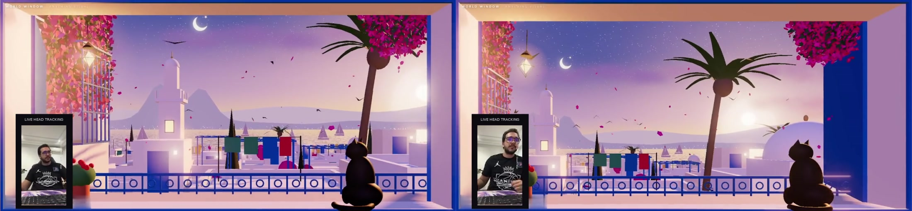

← Portfolio Lab · real-time and interactive experiments
World Window
World Window turns a screen into a window: the view follows your head, so the scene keeps real depth behind the glass instead of sliding like a picture. It runs in the browser with Three.js and off-axis projection, tracks the head through any webcam with MediaPipe, and works with the mouse too. The scene, Sidi Bou Said at dusk, is made entirely in code.
The clip is recorded live: a phone used as a webcam tracks my head (inset, bottom left) and the view follows. Try it yourself with the live demo; the mouse works if you have no camera. Code on GitHub: world-window.
Role: Concept and direction, AI-assisted build
Stack: Three.js · WebGL · MediaPipe
